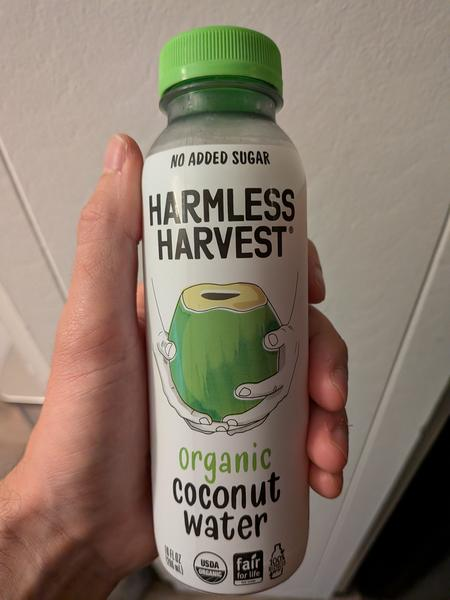

June 2025 · 10 fl oz (296 mL) · Still · Unpasteurized · No Added Sugar · USDA Organic · Fair Trade
Harmless Harvest has industry leading ethics (though still not perfect), and this is their classic, organic unpasteurized offering. Thai, of course.
Deliciously crisp, punchy, floral. No aftertaste. If you’ve had coconut water and didn’t like it, this is still worth trying because it is so much more delicate and balanced. Refreshing while still having some body and texture.
These coconuts are grown in habitats threatened by palm oil deforestation. If you find this site useful, consider donating to the Rainforest Action Network.